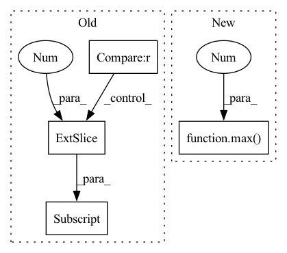

Pattern ID :33219
Before Change
:return: a sample, i.e. an input image and a target
if index == 0 :
img = torch.cat((
self.frames[0, :, :, :],
self.frames[0, :, :, :],
self.frames[1, :, :, :]), dim=0)
elif index == (self.__len__() - 1):
img = torch.cat((
self.frames[-2, :, :, :] ,
self.frames[-1, :, :, :],
self.frames[-1, :, :, :]), dim=0)
After Change
Get adjacent frames. Pad borders with "same". Therefore we use the max(0, ix-1) and min(lastix, index+1).
img = torch.cat((
self.frames[max(0 , index - 1) , :, :, :],
self.frames[index, :, :, :],
self.frames[min(self.__len__() - 1, index + 1), :, :, :]), dim=0)
In pattern: SUPERPATTERN
Frequency: 3
Non-data size: 4
Instances Fragment ID: 95898583
Project Name: turagalab/decode
Commit Name: a562faf6bd644c73162bb580e70bb738e7a7a2e6
Time: 2019-02-20
Author: gitdev@LRM.photo
File Name: deepsmlm/neuralfitter/dataset.py
M Class Name: SMLMDataset
N Class Name: SMLMDataset
M Method Name: __getitem__(2)
N Method Name: __getitem__(2)
M Parent Class: Dataset
N Parent Class: Dataset
M File Name: deepsmlm/neuralfitter/dataset.py
N File Name: deepsmlm/neuralfitter/dataset.py
M Start Line: 57
M End Line: 78
N Start Line: 58
N End Line: 61
Before Change
:return: a sample, i.e. an input image and a target
if index == 0 :
img = torch.cat((
self.frames[0, :, :, :] ,
self.frames[0, :, :, :],
self.frames[1, :, :, :]), dim=0)
After Change
if self.multi_frame_output:
Get adjacent frames. Pad borders with "same". Therefore we use the max(0, ix-1) and min(lastix, index+1).
img = torch.cat((
self.frames[max(0 , index - 1) , :, :, :],
self.frames[index, :, :, :],
self.frames[min(self.__len__() - 1, index + 1), :, :, :]), dim=0)
else: Fragment ID: 95898581
Project Name: turagalab/decode
Commit Name: defa569ae04e129cadab2011848376f7682ccd48
Time: 2019-03-01
Author: gitdev@LRM.photo
File Name: deepsmlm/neuralfitter/dataset.py
M Class Name: UnsupervisedDataset
N Class Name: UnsupervisedDataset
M Method Name: __getitem__(2)
N Method Name: __getitem__(2)
M Parent Class: Dataset
N Parent Class: Dataset
M File Name: deepsmlm/neuralfitter/dataset.py
N File Name: deepsmlm/neuralfitter/dataset.py
M Start Line: 100
M End Line: 121
N Start Line: 143
N End Line: 152
Before Change
assert phase in ["Gmain", "Greg", "Gboth", "Dmain", "Dreg", "Dboth"]
do_Gmain = (phase in ["Gmain", "Gboth"])
do_Dmain = (phase in ["Dmain", "Dboth"])
do_Gpl = (phase in ["Greg", "Gboth"]) and (self.pl_weight != 0)
do_Dr1 = (phase in ["Dreg", "Dboth"]) and (self.r1_gamma != 0)
loss_numpy = {}
// Gmain: Maximize logits for generated images.
if do_Gmain:
gen_img, _gen_ws = self.run_G(gen_z, gen_c, sync=(sync and not do_Gpl)) // May get synced by Gpl.
// d_gen_ws_dgen_z = torch.autograd.grad(outputs=[_gen_ws.sum()], inputs=[gen_z], create_graph=True, only_inputs=True)[0]
// aaaaaaaaaa0 = dic2[phase + "d_gen_ws_dgen_z"]
// aaaaaaaaaa1 = d_gen_ws_dgen_z.cpu().detach().numpy()
// ddd = np.mean((dic2[phase + "d_gen_ws_dgen_z"] - d_gen_ws_dgen_z.cpu().detach().numpy()) ** 2)
// print("ddd=%.6f" % ddd)
// aaaaaaaaa1 = dic2[phase + "gen_img"]
// aaaaaaaaa2 = gen_img.cpu().detach().numpy()
// ddd = np.mean((dic2[phase + "gen_img"] - gen_img.cpu().detach().numpy()) ** 2)
// print("ddd=%.6f" % ddd)
// ddd = np.mean((dic2[phase + "_gen_ws"] - _gen_ws.cpu().detach().numpy()) ** 2)
// print("ddd=%.6f" % ddd)
gen_logits = self.run_D(gen_img, gen_c, sync=False)
// ddd = np.mean((dic2[phase + "gen_logits"] - gen_logits.cpu().detach().numpy()) ** 2)
// print("ddd=%.6f" % ddd)
loss_Gmain = torch.nn.functional.softplus(-gen_logits) // -log(sigmoid(gen_logits))
loss_Gmain = loss_Gmain.mean()
loss_numpy["loss_Gmain"] = loss_Gmain.cpu().detach().numpy()
loss_G = loss_Gmain
loss_G = loss_G * float(gain)
loss_G.backward() // 咩酱：gain即上文提到的这个阶段的训练间隔。
// Gpl: Apply path length regularization.
if do_Gpl:
// print("----------------- do_Gpl -----------------")
batch_size = gen_z.shape[0] // self.pl_batch_shrink
batch_size = max(batch_size, 1)
// with misc.ddp_sync(self.G_flownet, sync):
// flow = self.G_flownet(torch.cat((cloth[:batch_size], aff_pose[:batch_size]), dim=1))
// warp_cloth = F.grid_sample(cloth[:batch_size, :3, :, :], flow)
gen_c_ = None
if gen_c is not None:
gen_c_ = gen_c[:batch_size]
gen_img, gen_ws = self.run_G(gen_z[:batch_size], gen_c_, sync=sync)
// ddd = np.mean((dic2[phase + "gen_img"] - gen_img.cpu().detach().numpy()) ** 2)
// print("ddd=%.6f" % ddd)
// ddd = np.mean((dic2[phase + "gen_ws"] - gen_ws.cpu().detach().numpy()) ** 2)
// print("ddd=%.6f" % ddd)
pl_noise = torch.randn_like(gen_img) / np.sqrt(gen_img.shape[2] * gen_img.shape[3])
// pl_noise = torch.ones_like(gen_img) / np.sqrt(gen_img.shape[2] * gen_img.shape[3])
pl_grads = torch.autograd.grad(outputs=[(gen_img * pl_noise).sum()], inputs=[gen_ws], create_graph=True, only_inputs=True)[0]
pl_lengths = pl_grads.square().sum(2).mean(1).sqrt()
// ddd = np.mean((dic2[phase + "pl_grads"] - pl_grads.cpu().detach().numpy()) ** 2)
// print("ddd=%.6f" % ddd)
// ddd = np.mean((dic2[phase + "pl_lengths"] - pl_lengths.cpu().detach().numpy()) ** 2)
// print("ddd=%.6f" % ddd)
if self.pl_mean is None:
self.pl_mean = torch.zeros([1, ], dtype=torch.float32, device=pl_lengths.device)
pl_mean = self.pl_mean.lerp(pl_lengths.mean(), self.pl_decay)
self.pl_mean.copy_(pl_mean.detach())
pl_penalty = (pl_lengths - pl_mean).square()
loss_Gpl = pl_penalty * self.pl_weight
loss_Gpl = (gen_img[:, 0, 0, 0] * 0 + loss_Gpl).mean() * float(gain)
loss_numpy["loss_Gpl"] = loss_Gpl.cpu().detach().numpy()
loss_Gpl.backward() // 咩酱：gain即上文提到的这个阶段的训练间隔。
After Change
phase = {"Greg": "none", "Gboth": "Gmain"}.get(phase, phase)
if self.r1_gamma == 0:
phase = {"Dreg": "none", "Dboth": "Dmain"}.get(phase, phase)
blur_sigma = max( 1 - cur_nimg / (self.blur_fade_kimg * 1e3), 0 ) * self.blur_init_sigma if self.blur_fade_kimg > 0 else 0
loss_numpy = {}
Fragment ID: 95898590
Project Name: miemie2013/miemiegan
Commit Name: c5e7ecffe23cf2fc2613ee06ec8fd94c8d7230ac
Time: 2022-03-24
Author: 53960695+miemie2013@users.noreply.github.com
File Name: mmgan/models/architectures/styleganv3_model.py
M Class Name: StyleGANv3Model
N Class Name: StyleGANv3Model
M Method Name: accumulate_gradients(9)
N Method Name: accumulate_gradients(9)
M Parent Class: torch.nn.Module
N Parent Class: torch.nn.Module
M File Name: mmgan/models/architectures/styleganv3_model.py
N File Name: mmgan/models/architectures/styleganv3_model.py
M Start Line: 140
M End Line: 251
N Start Line: 140
N End Line: 251